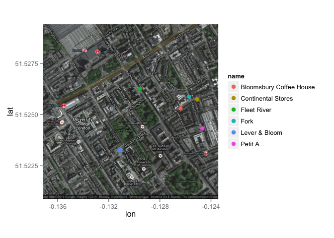

2. Panel data models, logit, further data manipulation and visualisation
2.1 Seminar
R training for SPP staff (session 2)
Javier Sajuria
9 December 2015
Preliminary steps
Remember to set up your working directory and open a new R script
setwd("WD")
Now, let's load the relevant packages. If you haven't installed them last week check the website to get the right commands:
library(foreign)
library(car)
library(readxl)
library(texreg)
library(Zelig)
library(sandwich)
library(plm)
library(ggplot2)
library(tidyr)
library(lmtest)
library(dplyr)
Panel data
We will use the WDI dataset (wdi.data).
wdi <- read.csv("https://raw.githubusercontent.com/UCLSPP/Staff-R-training/master/Week1/wdi.csv")
The function used to fit the panel data models is plm, and contains (at least) the following parameters:
plm(formula, data, index=c(unit, time), effect = c("individual","time","twoways"),
model = c("within","random"))
The arguments are:
| Argument | Description |
|---|---|
formula |
DV ~ IV |
data |
The dataset that contains our variables |
index |
Here we specify which variable contains the units and which contains the time |
effect |
This argument defines whether we are estimating the individual fixed effects, the time fixed effect, or both ("twoways") |
model |
Fixed effects ("within") or random effects ("random") |
Fixed effects:
# We first estimate the OLS model, as a baseline
ols <- lm(MaternalMortality ~ SafeWaterAccess + HealthExpenditure + PregnantWomenWithAnemia, data = wdi)
summary(ols)
Call:
lm(formula = MaternalMortality ~ SafeWaterAccess + HealthExpenditure +
PregnantWomenWithAnemia, data = wdi)
Residuals:
Min 1Q Median 3Q Max
-482.57 -79.98 -3.27 53.53 1878.73
Coefficients:
Estimate Std. Error t value Pr(>|t|)
(Intercept) 502.7318 35.9275 13.99 <2e-16 ***
SafeWaterAccess -10.0763 0.2660 -37.88 <2e-16 ***
HealthExpenditure 24.0685 1.6357 14.71 <2e-16 ***
PregnantWomenWithAnemia 11.7967 0.4105 28.74 <2e-16 ***
---
Signif. codes: 0 '***' 0.001 '**' 0.01 '*' 0.05 '.' 0.1 ' ' 1
Residual standard error: 191.2 on 2930 degrees of freedom
(7818 observations deleted due to missingness)
Multiple R-squared: 0.6757, Adjusted R-squared: 0.6754
F-statistic: 2035 on 3 and 2930 DF, p-value: < 2.2e-16
fixed_effects <- plm(MaternalMortality ~ SafeWaterAccess + HealthExpenditure + PregnantWomenWithAnemia,
data = wdi,
index = c("CountryCode", "Year"),
model = "within",
effect = "individual")
summary(fixed_effects)
Oneway (individual) effect Within Model
Call:
plm(formula = MaternalMortality ~ SafeWaterAccess + HealthExpenditure +
PregnantWomenWithAnemia, data = wdi, effect = "individual",
model = "within", index = c("CountryCode", "Year"))
Unbalanced Panel: n=175, T=7-17, N=2934
Residuals :
Min. 1st Qu. Median 3rd Qu. Max.
-563.000 -15.300 0.596 13.300 534.000
Coefficients :
Estimate Std. Error t-value Pr(>|t|)
SafeWaterAccess -8.79494 0.40917 -21.4948 < 2.2e-16 ***
HealthExpenditure -4.16778 1.22865 -3.3922 0.0007032 ***
PregnantWomenWithAnemia 5.91744 0.53636 11.0325 < 2.2e-16 ***
---
Signif. codes: 0 '***' 0.001 '**' 0.01 '*' 0.05 '.' 0.1 ' ' 1
Total Sum of Squares: 15806000
Residual Sum of Squares: 10147000
R-Squared : 0.35799
Adj. R-Squared : 0.33627
F-statistic: 512.248 on 3 and 2756 DF, p-value: < 2.22e-16
fixef(fixed_effects)
AFG AGO ALB ARE ARG ARM AUS
895.2281 919.8473 752.9895 722.6399 766.6782 746.9677 778.0787
AUT AZE BDI BEL BEN BFA BGD
779.1715 544.2196 1336.1258 787.0830 742.5123 754.8887 753.3688
BGR BHR BHS BIH BLR BLZ BOL
755.1332 682.0568 748.2338 737.8651 762.1208 658.4077 840.5761
BRA BRB BTN BWA CAF CAN CHE
728.1559 730.6359 868.5490 912.1539 1372.1780 793.7236 781.3137
CHL CHN CIV CMR COG COL COM
750.4381 666.6156 1084.8413 997.8618 865.5965 677.4029 1031.6335
CPV CRI CUB CYP CZE DEU DJI
557.8910 741.0169 688.4347 733.1411 758.7518 788.6171 910.2829
DNK DZA ECU EGY ERI ESP EST
787.8860 749.5304 622.9354 745.5925 939.5437 771.3776 752.8397
ETH FIN FJI FRA FSM GAB GBR
921.9012 780.0043 621.0829 787.6041 795.9626 789.1134 797.9996
GEO GHA GIN GMB GNB GNQ GRC
711.1553 725.0188 1093.2592 1240.4976 930.4182 701.4041 757.0488
GRD GTM GUY HND HRV HTI HUN
689.2499 716.9809 800.3775 749.5464 734.6161 722.1451 751.3423
IDN IND IRL IRN IRQ ISL ISR
725.4980 753.4940 749.1911 729.9931 594.8984 787.2447 779.3677
ITA JAM JOR JPN KAZ KEN KGZ
767.9238 726.0583 779.9979 740.0963 704.9217 924.2111 619.6080
KHM KIR KOR KWT LAO LBN LBR
519.6146 519.7549 723.7069 731.2665 697.6801 697.6807 1343.4727
LBY LCA LKA LSO LTU LUX LVA
464.0917 697.1185 614.0690 1174.6033 694.7585 779.0533 760.2860
MAR MDA MDG MDV MEX MKD MLI
713.8166 660.3864 650.9510 728.6406 718.3071 763.1470 873.6898
MLT MMR MNE MNG MOZ MRT MUS
785.7035 662.5322 734.8331 509.0467 941.7322 905.1176 722.7376
MWI MYS NAM NER NGA NIC NLD
1130.1263 714.8234 875.2018 825.4572 1184.4262 778.1611 787.6718
NOR NPL NZL OMN PAK PAN PER
786.9385 907.4428 797.1922 566.9183 791.5726 722.0095 673.4769
PHL PNG POL PRT PRY QAT ROM
666.0577 387.6952 719.2244 763.5802 671.3381 726.5799 677.4151
RUS RWA SAU SDN SEN SGP SLB
760.4371 1275.2134 615.8655 789.5044 704.0704 744.3194 680.0273
SLE SLV SRB STP SUR SVK SVN
2437.3338 649.7161 746.0473 659.5402 833.1217 750.5592 756.9190
SWE SWZ SYR TCD TGO THA TJK
783.3692 875.6141 662.4981 1343.7694 609.5269 682.0908 438.0624
TKM TMP TON TTO TUN TUR TZA
400.8341 862.0982 821.1880 701.5059 724.0002 729.9296 913.3639
UGA UKR URY USA UZB VCT VEN
869.9022 758.7593 745.0221 862.0418 593.4577 698.8435 733.5592
VNM VUT WSM YEM ZAF ZAR ZMB
617.7027 615.2649 753.9982 733.3686 722.0298 954.9441 707.2729
screenreg(list(ols, fixed_effects))
=================================================
Model 1 Model 2
-------------------------------------------------
(Intercept) 502.73 ***
(35.93)
SafeWaterAccess -10.08 *** -8.79 ***
(0.27) (0.41)
HealthExpenditure 24.07 *** -4.17 ***
(1.64) (1.23)
PregnantWomenWithAnemia 11.80 *** 5.92 ***
(0.41) (0.54)
-------------------------------------------------
R^2 0.68 0.36
Adj. R^2 0.68 0.34
Num. obs. 2934 2934
RMSE 191.16
=================================================
*** p < 0.001, ** p < 0.01, * p < 0.05
. The plmtest() function can test for the presence for individual or time effects.
plmtest(fixed_effects, effect="individual")
Lagrange Multiplier Test - (Honda)
data: MaternalMortality ~ SafeWaterAccess + HealthExpenditure + PregnantWomenWithAnemia
normal = 137.93, p-value < 2.2e-16
alternative hypothesis: significant effects
The null hypothesis for plmtest() is that there are no individual effects.
We can model these time fixed effects using the effect = "time" argument in plm().
time_effects <- plm(MaternalMortality ~ SafeWaterAccess + HealthExpenditure + PregnantWomenWithAnemia ,
data = wdi,
index = c("CountryCode", "Year"),
model = "within",
effect = "time")
summary(time_effects)
Oneway (time) effect Within Model
Call:
plm(formula = MaternalMortality ~ SafeWaterAccess + HealthExpenditure +
PregnantWomenWithAnemia, data = wdi, effect = "time", model = "within",
index = c("CountryCode", "Year"))
Unbalanced Panel: n=175, T=7-17, N=2934
Residuals :
Min. 1st Qu. Median 3rd Qu. Max.
-486.00 -80.10 -3.21 51.60 1890.00
Coefficients :
Estimate Std. Error t-value Pr(>|t|)
SafeWaterAccess -10.07778 0.26654 -37.810 < 2.2e-16 ***
HealthExpenditure 23.86712 1.64865 14.477 < 2.2e-16 ***
PregnantWomenWithAnemia 11.87103 0.41316 28.732 < 2.2e-16 ***
---
Signif. codes: 0 '***' 0.001 '**' 0.01 '*' 0.05 '.' 0.1 ' ' 1
Total Sum of Squares: 327280000
Residual Sum of Squares: 106910000
R-Squared : 0.67334
Adj. R-Squared : 0.66875
F-statistic: 2002.18 on 3 and 2914 DF, p-value: < 2.22e-16
screenreg(list(ols, fixed_effects, time_effects))
==============================================================
Model 1 Model 2 Model 3
--------------------------------------------------------------
(Intercept) 502.73 ***
(35.93)
SafeWaterAccess -10.08 *** -8.79 *** -10.08 ***
(0.27) (0.41) (0.27)
HealthExpenditure 24.07 *** -4.17 *** 23.87 ***
(1.64) (1.23) (1.65)
PregnantWomenWithAnemia 11.80 *** 5.92 *** 11.87 ***
(0.41) (0.54) (0.41)
--------------------------------------------------------------
R^2 0.68 0.36 0.67
Adj. R^2 0.68 0.34 0.67
Num. obs. 2934 2934 2934
RMSE 191.16
==============================================================
*** p < 0.001, ** p < 0.01, * p < 0.05
Let's run the the Lagrange Multiplier test on the time_effects model again to see if indeed there are time effects in our model. Remeber, the null hypotheses for the test is that there are no time fixed effects.
plmtest(time_effects, effect="time")
Lagrange Multiplier Test - time effects (Honda)
data: MaternalMortality ~ SafeWaterAccess + HealthExpenditure + PregnantWomenWithAnemia
normal = -2.1755, p-value = 0.02959
alternative hypothesis: significant effects
The p-value tells us that we can reject the null hypothesis as there are indeed time fixed effects present.
In order to control for both country AND time fixed effects, we need to estimate a model using the effect = "twoways" argument.
twoway_effects <- plm(MaternalMortality ~ SafeWaterAccess + HealthExpenditure + PregnantWomenWithAnemia,
data = wdi,
index = c("CountryCode", "Year"),
model = "within",
effect = "twoways")
summary(twoway_effects)
Twoways effects Within Model
Call:
plm(formula = MaternalMortality ~ SafeWaterAccess + HealthExpenditure +
PregnantWomenWithAnemia, data = wdi, effect = "twoways",
model = "within", index = c("CountryCode", "Year"))
Unbalanced Panel: n=175, T=7-17, N=2934
Residuals :
Min. 1st Qu. Median 3rd Qu. Max.
-566.000 -16.500 -0.454 14.400 536.000
Coefficients :
Estimate Std. Error t-value Pr(>|t|)
SafeWaterAccess -8.55480 0.43546 -19.6455 < 2.2e-16 ***
HealthExpenditure -3.68403 1.29204 -2.8513 0.004386 **
PregnantWomenWithAnemia 5.28353 0.68313 7.7343 1.45e-14 ***
---
Signif. codes: 0 '***' 0.001 '**' 0.01 '*' 0.05 '.' 0.1 ' ' 1
Total Sum of Squares: 12164000
Residual Sum of Squares: 10125000
R-Squared : 0.16761
Adj. R-Squared : 0.15653
F-statistic: 183.906 on 3 and 2740 DF, p-value: < 2.22e-16
The results of all three models are shown below.
screenreg(list(fixed_effects, time_effects, twoway_effects),
custom.model.names = c("Country Fixed Effects", "Time Fixed Effects", "Twoway Fixed Effects"))
========================================================================================
Country Fixed Effects Time Fixed Effects Twoway Fixed Effects
----------------------------------------------------------------------------------------
SafeWaterAccess -8.79 *** -10.08 *** -8.55 ***
(0.41) (0.27) (0.44)
HealthExpenditure -4.17 *** 23.87 *** -3.68 **
(1.23) (1.65) (1.29)
PregnantWomenWithAnemia 5.92 *** 11.87 *** 5.28 ***
(0.54) (0.41) (0.68)
----------------------------------------------------------------------------------------
R^2 0.36 0.67 0.17
Adj. R^2 0.34 0.67 0.16
Num. obs. 2934 2934 2934
========================================================================================
*** p < 0.001, ** p < 0.01, * p < 0.05
Serial Correlation
We will test for serial correlation with Breusch-Godfrey test using pbgtest() and provide solutions for correcting it if necessary.
pbgtest(twoway_effects)
Breusch-Godfrey/Wooldridge test for serial correlation in panel
models
data: MaternalMortality ~ SafeWaterAccess + HealthExpenditure + PregnantWomenWithAnemia
chisq = 2134.6, df = 7, p-value < 2.2e-16
alternative hypothesis: serial correlation in idiosyncratic errors
The null hypothesis for the Breusch-Godfrey test is that there is no serial correlation. The p-value from the test tells us that we can reject the null hypothesis and confirms the presence of serial corrleation in our error term.
We can correct for serial correlation using coeftest() similar to how we corrected for heteroskedastic errors. We'll use the vcovHC() function for obtaining a heteroskedasticity-consistent covariance matrix, but since we're interested in correcting for autocorrelation as well, we will specify method = "arellano" which corrects for both heteroskedasticity and autocorrelation.
twoway_effects_hac <- coeftest(twoway_effects, vcov = vcovHC(twoway_effects, method = "arellano", type = "HC3"))
screenreg(list(twoway_effects, twoway_effects_hac),
custom.model.names = c("Twoway Fixed Effects", "Twoway Fixed Effects (HAC)"))
=========================================================================
Twoway Fixed Effects Twoway Fixed Effects (HAC)
-------------------------------------------------------------------------
SafeWaterAccess -8.55 *** -8.55 ***
(0.44) (1.61)
HealthExpenditure -3.68 ** -3.68
(1.29) (5.88)
PregnantWomenWithAnemia 5.28 *** 5.28 *
(0.68) (2.28)
-------------------------------------------------------------------------
R^2 0.17
Adj. R^2 0.16
Num. obs. 2934
=========================================================================
*** p < 0.001, ** p < 0.01, * p < 0.05
We can see that with heteroskedasticity and autocorrelation consistent (HAC) standard errors, the percent of male population (10 - 29 yr old) is no longer a significant predictor in our model.
Lagged Dependent Variables (LDV) and Dynamic Models
The lag() function generates lagged dependent variables and has the following form:
lag(x, k)
| Argument | Description |
|---|---|
x |
A vector or matrix of observations |
k |
Number of lags. Default is 1 |
ldv_model <-
plm(MaternalMortality ~ lag(MaternalMortality) + SafeWaterAccess + HealthExpenditure
+ PregnantWomenWithAnemia,
data = wdi,
index = c("CountryCode", "Year"),
model = "within",
effect = "twoways")
summary(ldv_model)
Twoways effects Within Model
Call:
plm(formula = MaternalMortality ~ lag(MaternalMortality) + SafeWaterAccess +
HealthExpenditure + PregnantWomenWithAnemia, data = wdi,
effect = "twoways", model = "within", index = c("CountryCode",
"Year"))
Unbalanced Panel: n=175, T=7-17, N=2934
Residuals :
Min. 1st Qu. Median 3rd Qu. Max.
-81.9000 -1.7300 0.0802 2.0900 93.1000
Coefficients :
Estimate Std. Error t-value Pr(>|t|)
lag(MaternalMortality) 0.9677067 0.0028302 341.9212 < 2.2e-16 ***
SafeWaterAccess -0.4353248 0.0700455 -6.2149 5.919e-10 ***
HealthExpenditure -0.2857421 0.1957745 -1.4595 0.1445
PregnantWomenWithAnemia -0.4721160 0.1047386 -4.5076 6.833e-06 ***
---
Signif. codes: 0 '***' 0.001 '**' 0.01 '*' 0.05 '.' 0.1 ' ' 1
Total Sum of Squares: 12164000
Residual Sum of Squares: 231780
R-Squared : 0.98094
Adj. R-Squared : 0.91575
F-statistic: 35250.6 on 4 and 2739 DF, p-value: < 2.22e-16
Cross Sectional Dependence
We can check for cross sectional dependence using the Pesaran cross sectional dependence test or pcdtest().
pcdtest(twoway_effects)
Pesaran CD test for cross-sectional dependence in panels
data: formula
z = NaN, p-value = NA
alternative hypothesis: cross-sectional dependence
As we've seen with other tests, the null hypothesis is that there is no cross sectional dependence. The p-value, however tells that there is indeed cross-sectional dependence and we need to correct it. There are two general approaches to correcting for cross sectional dependence.
Beck and Katz (1995) method or Panel Corrected Standard Errors (PCSE): We can obtain Panel Corrected Standard Errors (PCSE) by first obtaining a robust variance-covariance matrix for panel models with the Beck and Katz (1995) method using the vcovBK() and passing it to the familiar coeftest() function.
twoway_effects_pcse <- coeftest(twoway_effects, vcov = vcovBK(twoway_effects, type="HC3", cluster = "group"))
The results from PCSE are sensitive to the ratio between the number of time periods in the dataset (T) and the total number of observations (N). When we're dealing with large datasets (i.e. the T/N ratio is small), we use the Driscoll and Kraay method:
Driscoll and Kraay (1998) (SCC):
twoway_effects_scc <- coeftest(twoway_effects, vcov = vcovSCC(twoway_effects, type="HC3", cluster = "group"))
screenreg(list(ols, fixed_effects, twoway_effects, ldv_model, twoway_effects_pcse, twoway_effects_scc),
custom.model.names = c("Pooled","Country Effects", "Twoway Fixed Effects", "LDV", "PCSE", "SCC"))
==============================================================================================================
Pooled Country Effects Twoway Fixed Effects LDV PCSE SCC
--------------------------------------------------------------------------------------------------------------
(Intercept) 502.73 ***
(35.93)
SafeWaterAccess -10.08 *** -8.79 *** -8.55 *** -0.44 *** -8.55 *** -8.55 ***
(0.27) (0.41) (0.44) (0.07) (1.64) (0.32)
HealthExpenditure 24.07 *** -4.17 *** -3.68 ** -0.29 -3.68 -3.68 ***
(1.64) (1.23) (1.29) (0.20) (3.70) (0.74)
PregnantWomenWithAnemia 11.80 *** 5.92 *** 5.28 *** -0.47 *** 5.28 * 5.28 ***
(0.41) (0.54) (0.68) (0.10) (2.43) (0.46)
lag(MaternalMortality) 0.97 ***
(0.00)
--------------------------------------------------------------------------------------------------------------
R^2 0.68 0.36 0.17 0.98
Adj. R^2 0.68 0.34 0.16 0.92
Num. obs. 2934 2934 2934 2934
RMSE 191.16
==============================================================================================================
*** p < 0.001, ** p < 0.01, * p < 0.05
Logistic models
# clear environment
rm(list = ls())
Loading Data
We use a subset of the 2005 face-to-face British post election study to explain turnout. We drop missing values (missings are on the same observations for all variables). We also rename Gender to male because 1 stands for men.
# load British post election study
bes <- read.dta("http://uclspp.github.io/PUBLG100/data/bes.dta")
head(bes)
cs_id Turnout Vote2001 Income Age Gender PartyID Influence Attention
1 1 0 1 4 76 0 1 1 8
2 2 1 1 5 32 1 0 3 8
3 3 1 NA NA NA NA NA NA NA
4 4 0 1 1 35 0 0 1 1
5 5 1 1 7 56 1 0 1 9
6 6 1 1 4 76 0 1 4 8
Telephone LeftrightSelf CivicDutyIndex polinfoindex edu15 edu16 edu17
1 1 7 20 7 1 0 0
2 1 6 15 5 0 1 0
3 NA NA NA NA NA NA NA
4 0 5 26 1 0 1 0
5 1 9 16 7 0 0 1
6 1 8 16 4 0 1 0
edu18 edu19plus in_school in_uni CivicDutyScores
1 0 0 0 0 -0.6331136
2 0 0 0 0 1.4794579
3 NA NA NA NA NA
4 0 0 0 0 -2.1466281
5 0 0 0 0 1.0324940
6 0 0 0 0 0.3658024
# frequency table of voter turnout
table(bes$Turnout)
0 1
1079 3712
# rename Gender to male b/c 1 = male & remove missings
bes <- bes %>%
rename(male = Gender) %>%
na.omit()
Dplyr summarise()
We will look at summary statistics by groups using group_by() and summarise(). First we group by the variable male and then we calculate mean and standard deviation of voter turnout. The syntax is: summarise(new.variable = summary.statistic). With summarise_each() you can calculate descriptive statistics for multiple columns.
# mean and standard deviation for Turnout by gender
bes %>%
group_by(male) %>%
summarise(avg_turnout = mean(Turnout), sd_turnout = sd(Turnout))
Source: local data frame [2 x 3]
male avg_turnout sd_turnout
1 0 0.7465517 0.4350791
2 1 0.7332971 0.4423559
# mean for multiple columns using "summarise_each"
bes %>%
group_by(male) %>%
summarise_each(funs(mean), Turnout, Vote2001, Age, LeftrightSelf,
CivicDutyIndex, polinfoindex)
Source: local data frame [2 x 7]
male Turnout Vote2001 Age LeftrightSelf CivicDutyIndex
1 0 0.7465517 0.8400862 51.04914 5.397414 17.35216
2 1 0.7332971 0.8365019 50.75394 5.409560 17.76697
Variables not shown: polinfoindex (dbl)
Regression with a binary dependent variable
We use the glm() function to estimate a logistic regression. The syntax is familiar from lm() and plm(). "glm" stands for generalized linear models and can be used to estimate many different models. The argument family = binomial(link = "logit") tells glm that we have a binary dependent variable that our link function is the cumulative logistic function.
# logit model
model1 <- glm(Turnout ~ Income + polinfoindex + male + edu15 + edu17 + edu18 +
edu19plus + in_school + in_uni, family = binomial(link = "logit"),
data = bes)
# regression output
screenreg(model1)
============================
Model 1
----------------------------
(Intercept) -1.14 ***
(0.15)
Income 0.03
(0.02)
polinfoindex 0.38 ***
(0.02)
male -0.35 ***
(0.08)
edu15 0.38 ***
(0.10)
edu17 0.46 **
(0.15)
edu18 0.11
(0.14)
edu19plus 0.24 *
(0.12)
in_school 0.15
(0.39)
in_uni -0.72 **
(0.25)
----------------------------
AIC 4401.20
BIC 4464.53
Log Likelihood -2190.60
Deviance 4381.20
Num. obs. 4161
============================
*** p < 0.001, ** p < 0.01, * p < 0.05
Predicted Probabilities and Predictive Power
To assess the predictive power of our model we will check the percentage of cases that it correctly predicts. If we look at the mean of Turnout we will see that is 0.74. That means 74% of the respondents said that they turned out to vote. If you predict for every respondent that they voted, you will be right for 74% of the people. That is the naive guess and the benchmark for our model. If we predict more than 74% of cases correctly our model adds value.
Below we will estimate predicted probabilities for each observation. That is, the probability our model assigns that a respondent will turn out to vote for every person in our data. To do so we use the predict() function. Type help(predict.glm) for information on all arguments. We use: predict(model.name, type = "response"). The first argument is the glm object (our model name) and the second specifies that we want predicted probabilities.
# predicted probabilities for all respondents
predicted.probabilities <- predict(model1, type = "response")
Now that we have assigned probabilities to people turning out, we have to translate those into outcomes. Turnout is binary. A straightforward way, would be to say: We predict that all people with a predicted probability above 50% vote and all with predicted probabilities below or equal to 50% abstain. We specify this threshold below.
# threshold to translate predicted probabilities into outcomes
threshold <- .5
We create a new variable expected.values that is 1 if our predicted probability (predicted.probabilites) is larger than 0.5 and 0 otherwise. This is easily done with the ifelse() function. The syntax is as follows:
ifelse( condition, what to do if condition is true, what to do if condition is false)
# set prediction to 1 if predicted probability is larger than 0.5 and put 0 otherwise
expected.values <- ifelse(predicted.probabilities > threshold, yes = 1, no = 0)
All we have to do now is to compare our expected values of turnout against the actually observed values of turnout.
We proceed by producing a table of predictions against actual outcomes. With that we will calculate the percentage of correctly predicted cases and compare that to the naive guess. We have the actually observed cases in our dependent variable (Turnout). The table is just a frequency table. The percentage of correctly predicted cases is simply the sum of correctly predicted cases over the number of cases.
# actually observed outcomes
observed <- bes$Turnout
# putting observed outcomes and predicted outcomes into a table
outcome.table <- table(observed,expected.values)
outcome.table
expected.values
observed 0 1
0 160 919
1 108 2974
# correctly predicted cases:
# (correct negatives + correct positives) / total number of outcomes
correctly.predicted <- (outcome.table[1,1] + outcome.table[2,2]) / sum(outcome.table)
correctly.predicted
[1] 0.7531843
# comparing rate of correctly predicted to naive guess
mean(bes$Turnout)
[1] 0.7406873
You can see that our model outperforms the naive guess slightly. The more lopsided the distribution of your binary dependent variable, the harder it is to build a successful model.
Joint hypothesis testing
We add more explanatory variables to our model: Influence and Age. Influence corresponds to a theory we want to test while Age is a socio-economic control variable.
# esimate the new model 2 including Influence and Age
model2 <- glm(Turnout ~ Income + polinfoindex + Influence + male + Age +
edu15 + edu17 + edu18 + edu19plus + in_school + in_uni,
family = binomial(link = "logit"), data = bes)
# regression table comparing model 1 and model 2
screenreg( list(model1, model2) )
==========================================
Model 1 Model 2
------------------------------------------
(Intercept) -1.14 *** -3.90 ***
(0.15) (0.22)
Income 0.03 0.15 ***
(0.02) (0.02)
polinfoindex 0.38 *** 0.25 ***
(0.02) (0.02)
male -0.35 *** -0.36 ***
(0.08) (0.08)
edu15 0.38 *** -0.34 **
(0.10) (0.11)
edu17 0.46 ** 0.36 *
(0.15) (0.16)
edu18 0.11 0.14
(0.14) (0.15)
edu19plus 0.24 * 0.01
(0.12) (0.13)
in_school 0.15 1.13 **
(0.39) (0.40)
in_uni -0.72 ** -0.05
(0.25) (0.27)
Influence 0.21 ***
(0.02)
Age 0.05 ***
(0.00)
------------------------------------------
AIC 4401.20 4003.90
BIC 4464.53 4079.90
Log Likelihood -2190.60 -1989.95
Deviance 4381.20 3979.90
Num. obs. 4161 4161
==========================================
*** p < 0.001, ** p < 0.01, * p < 0.05
We will test if model 2 does better at predicting turnout than model 1. We use the likelihood ratio test. We use the lmtest package to test whether that difference is statistically significant using the lrtest() function. The syntax is the following:
lrtest(model with less variables, model with more variables)
# the likelihood ratio test
lrtest(model1, model2)
Likelihood ratio test
Model 1: Turnout ~ Income + polinfoindex + male + edu15 + edu17 + edu18 +
edu19plus + in_school + in_uni
Model 2: Turnout ~ Income + polinfoindex + Influence + male + Age + edu15 +
edu17 + edu18 + edu19plus + in_school + in_uni
#Df LogLik Df Chisq Pr(>Chisq)
1 10 -2190.6
2 12 -1990.0 2 401.3 < 2.2e-16 ***
---
Signif. codes: 0 '***' 0.001 '**' 0.01 '*' 0.05 '.' 0.1 ' ' 1
# Akaike's Information Criterion
AIC(model1, model2)
df AIC
model1 10 4401.200
model2 12 4003.901
# Bayesian Infromation Criterion
BIC(model1, model2)
df BIC
model1 10 4464.535
model2 12 4079.903
Substantial interpretation
Due to the functional form of the cumulative logistic function, the effect of a change in an independent variable depends on the level of the independent variable, i.e. they are not constant. Interpretation is nonetheless easily accomplished using Zelig. We pick meaningful scenarios and predict the probability that a person will vote based on the scenarios. First, we re-estimate model 2 using zelig.
# re-estimate model 2 using Zelig
z.m2 <- zelig(Turnout ~ Income + polinfoindex + Influence + male + Age + edu15 +
edu17 + edu18 + edu19plus + in_school + in_uni, model = "logit",
data = bes, cite = FALSE)
What are meaningful scenarios? A meaningful scenario is a set of covariate values that corresponds to some case that is interesting in reality. For example, you may want to compare a women with 18 years of education to a man with 18 years of education while keeping all other variables at their means, medians or modes.
We set binary variables to their modes, ordinally scaled variables to their medians and interval scaled variables to their means. By doing so for all variables except education and gender, we compare the average women with 18 years of education to the average man with 18 years of education.
# average man with 18 years of education
x.male.18edu <- setx(z.m2, male = 1, edu18 = 1, Income = mean(bes$Income),
polinfoindex = mean(bes$polinfoindex), Influence = mean(bes$Influence),
Age = mean(bes$Age), edu15 = 0, edu17 = 0, edu19plus = 0,
in_school = 0, in_uni = 0)
# check covariate values (if you have missings here, the simulation will not work)
t(x.male.18edu$values)
male edu18 Income polinfoindex Influence Age edu15 edu17
[1,] 1 1 5.321557 5.409277 3.608508 50.91853 0 0
edu19plus in_school in_uni
[1,] 0 0 0
# average woman with 18 years of education
x.female.18edu <- setx(z.m2, male = 0, edu18 = 1, Income = mean(bes$Income),
polinfoindex = mean(bes$polinfoindex), Influence = mean(bes$Influence),
Age = mean(bes$Age), edu15 = 0, edu17 = 0, edu19plus = 0,
in_school = 0, in_uni = 0)
# check covariate values (if you have missings here, the simulation will not work)
t(x.female.18edu$values)
male edu18 Income polinfoindex Influence Age edu15 edu17
[1,] 0 1 5.321557 5.409277 3.608508 50.91853 0 0
edu19plus in_school in_uni
[1,] 0 0 0
Note: Do not worry about the t() around the covariate vectors. This simply transposes the vector so that it is printed horizontally instead of vertically.
You see that the only difference between the covariate values in the two scenarios is gender. Therefore, we can compare a women and a man that are identical in all other attributes in our model. This is what keeping other variables constant means.
Now all we have to do is simulate and compare the results.
# make simulation replicable, the values in set.seed() do not matter
set.seed(123)
# simulate with our two scenarios
s.out <- sim(z.m2, x = x.female.18edu, x1 = x.male.18edu)
# outcomes, check especially first differences
summary(s.out)
Model: logit
Number of simulations: 1000
Values of X
(Intercept) Income polinfoindex Influence male Age edu15 edu17
1 1 5.321557 5.409277 3.608508 0 50.91853 0 0
edu18 edu19plus in_school in_uni
1 1 0 0 0
attr(,"assign")
[1] 0 1 2 3 4 5 6 7 8 9 10 11
Values of X1
(Intercept) Income polinfoindex Influence male Age edu15 edu17
1 1 5.321557 5.409277 3.608508 1 50.91853 0 0
edu18 edu19plus in_school in_uni
1 1 0 0 0
attr(,"assign")
[1] 0 1 2 3 4 5 6 7 8 9 10 11
Expected Values: E(Y|X)
mean sd 50% 2.5% 97.5%
0.838 0.019 0.838 0.795 0.873
Expected Values: E(Y|X1)
mean sd 50% 2.5% 97.5%
0.783 0.025 0.784 0.73 0.832
Predicted Values: Y|X
0 1
0.162 0.838
Predicted Values: Y|X1
0 1
0.217 0.783
First Differences: E(Y|X1) - E(Y|X)
mean sd 50% 2.5% 97.5%
-0.054 0.014 -0.054 -0.082 -0.028
plot(s.out)

Our next step will be to compare two groups like men and women while varying another continuous variable from lowest to highest. We use income here. So, we set a sequence for income, vary gender and keep every other variable constant at its appropriate measure of central tendency.
# women with income levels from lowest to highest (notice we put education to the mode)
x.fem <- setx(z.m2, male = 0, Income = 1:13, polinfoindex = mean(bes$polinfoindex),
Influence = mean(bes$Influence), Age = mean(bes$Age),
edu15 = 1, edu17 = 0, edu18 = 0, edu19plus = 0, in_school = 0, in_uni = 0)
# men with income levels from lowest to highest (notice we put education to the mode)
x.mal <- setx(z.m2, male = 1, Income = 1:13, polinfoindex = mean(bes$polinfoindex),
Influence = mean(bes$Influence), Age = mean(bes$Age),
edu15 = 1, edu17 = 0, edu18 = 0, edu19plus = 0, in_school = 0, in_uni = 0)
If you want to check the values we have set again this would work slightly different this time because we have set Income to a sequence. You will see the values that you have set if you type names(x.fem) and names(x.mal).
# simulation
s.out2 <- sim(z.m2, x = x.fem, x1 = x.mal)
We will illustrate our results. The plot function here is slightly different as well. You use plot.ci() instead of the usual plot() function.
# final plot
plot.ci (s.out2,
ci = 95,
xlab = "income",
ylab = "predicted probability of Voting",
main = "effect of income by gender")
# add labels manually
text( x = 2, y = .75, labels = "women" )
text( x = 7, y = .68, labels = "men" )

BONUS: Maps
Let's play with some maps. How about if I show you the location of my favourite coffee shops?
install.packages("devtools")
install.packages("ggmap")
install.packages("leafletR")
library(ggmap)
devtools::install_github("dill/emoGG")
Downloading github repo dill/emoGG@master
Installing emoGG
'/Library/Frameworks/R.framework/Resources/bin/R' --no-site-file \
--no-environ --no-save --no-restore CMD INSTALL \
'/private/var/folders/fm/59csfz2j6xggcgg45nz0kgwr0000gn/T/Rtmpzs5vvV/devtools27f18fd3af8/dill-emoGG-f2436e5' \
--library='/Users/javier/Library/R/3.2/library' --install-tests
library(emoGG)
sppmap <- qmap("WC1H 9QU", zoom = 16, maptype="hybrid")
Map from URL : http://maps.googleapis.com/maps/api/staticmap?center=WC1H+9QU&zoom=16&size=640x640&scale=2&maptype=hybrid&language=en-EN&sensor=false
Information from URL : http://maps.googleapis.com/maps/api/geocode/json?address=WC1H%209QU&sensor=false
coffee_shops <- data.frame(lat=c(51.526259,51.523253, 51.525874, 51.525748, 51.5243248, 51.525302),
lon=c(-0.129560,-0.131100, -0.125719, -0.125088, -0.124673, -0.126386),
name=c("Fleet River", "Lever & Bloom", "Fork", "Continental Stores", "Petit A", "Bloomsbury Coffee House"))
sppmap + geom_point(data=coffee_shops, aes(x=coffee_shops$lon, y=coffee_shops$lat, colour=name), size=3)

## We can also use emojis!!
sppmap + geom_emoji(data=coffee_shops, aes(x=coffee_shops$lon, y=coffee_shops$lat, colour=name), emoji="2615")
With the following code you can plot an interactive map
library(leafletR)
q.dat <- toGeoJSON(data = coffee_shops, dest=tempdir(), name="coffee")
q.style <- styleSingle(col=2, lwd=1, alpha=1)
q.map <- leaflet(data = q.dat, base.map = "tls", popup = "name", dest=tempdir(), controls=c("all"), incl.data = TRUE, title = "Javier's favourite coffee shops", style=q.style, size = c(500,500))
q.map